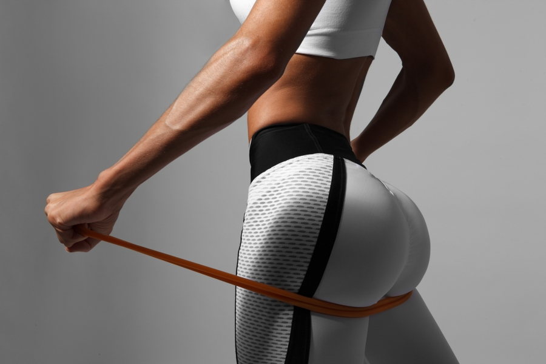

Ada saat-saat ketika saya merasa malas dan hanya ingin tetap di tempat tidur sepanjang hari, tetapi saya tahu bahwa berolahraga adalah cara terbaik untuk mendapatkan endorfin, yang akan membuat saya merasa lebih baik secara emosional dan fisik.
Heather Locklear
Pada akhirnya, kamu enggak akan bahagia sampai kamu mencintai dirimu sendiri.
Lady Gaga
kami percaya bahwa setiap orang, terlepas dari usia atau kemampuan fisiknya, dapat mencapai tujuannya!
Bagaimana sih cara membentuk ABS perut kamu?
perut dikatakan sempurna apabila memiliki kadar lemak yang rendah sehingga perut Anda terlihat kencang dan sixpack. Tenang, otot perut sixpack pada dasarnya dimiliki oleh tiap orang. Namun, tidak semuanya berhasil menonjolkan perut sixpacknya karena tertutup oleh lemak.
Yuk latih otot perut kamu
ABS WORKOUT
perut dikatakan sempurna apabila memiliki kadar lemak yang rendah sehingga perut Anda terlihat kencang dan sixpack. Tenang, otot perut sixpack pada dasarnya dimiliki oleh tiap orang. Namun, tidak semuanya berhasil menonjolkan perut sixpacknya karena tertutup oleh lemak.
Yuk latih otot perut kamu
ABS WORKOUT

Bagaimana sih cara membentuk otot BUTT kamu?
Selain pinggang yang ramping, punya bokong indah juga akan menunjang penampilanmu. Apalagi saat kamu menggunakan jeans atau celana yang akan menunjukkan lekuk tubuhmu.Ternyata, untuk punya bokong seindah para model ini, kamu tak perlu operasi plastik loh!
Yuk latih otot butt kamu
BUTT WORKOUT
Selain pinggang yang ramping, punya bokong indah juga akan menunjang penampilanmu. Apalagi saat kamu menggunakan jeans atau celana yang akan menunjukkan lekuk tubuhmu.Ternyata, untuk punya bokong seindah para model ini, kamu tak perlu operasi plastik loh!
Yuk latih otot butt kamu
BUTT WORKOUT
 Bagaimana sih cara membentuk otot ARM kamu?
Bagaimana sih cara membentuk otot ARM kamu?Otot lengan sangat menarik karena begitu terlihat jelas dalam keseharian anda. Selain jelas terlihat, otot lengan cukup mudah dibentuk karena tidak ada tumpukan lemak seperti perut.lengan yang berlemak bagi wanita pasti sangat memperjelek tampilanmu bukan?
Yuk latih otot arm kamu
ARM WORKOUT
Bagaimana sih cara membentuk otot LEG kamu?
Jika Anda ingin mengencangkan otot-otot kaki, leg lift (latihan mengangkat kaki) merupakan latihan terbaik yang dapat Anda lakukan. Ada beberapa variasi leg lift yang dapat Anda pilih, tergantung pada kondisi fisik dan tingkat intensitas yang Anda cari dalam latihan.Kamu ingin tahu caranya?
Yuk latih otot leg kamu
LEG WORKOUT
Jika Anda ingin mengencangkan otot-otot kaki, leg lift (latihan mengangkat kaki) merupakan latihan terbaik yang dapat Anda lakukan. Ada beberapa variasi leg lift yang dapat Anda pilih, tergantung pada kondisi fisik dan tingkat intensitas yang Anda cari dalam latihan.Kamu ingin tahu caranya?
Yuk latih otot leg kamu
LEG WORKOUT
@Copyright 2019 | Fatin Batrisyia & Dinda Deci Sunya | Shefitness